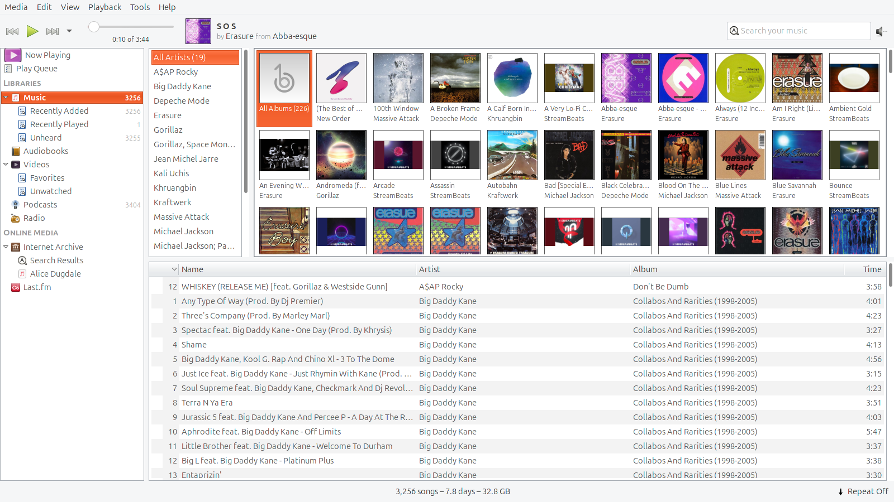
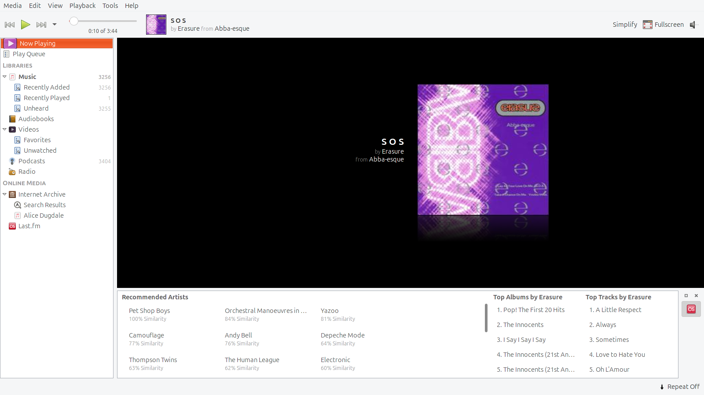
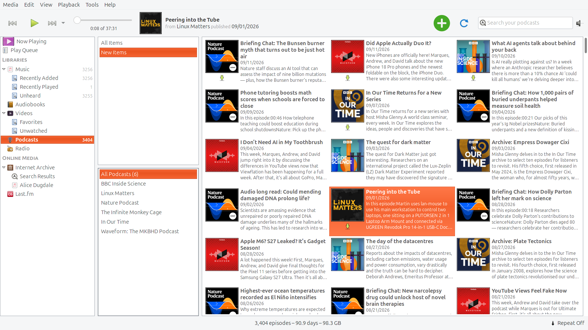
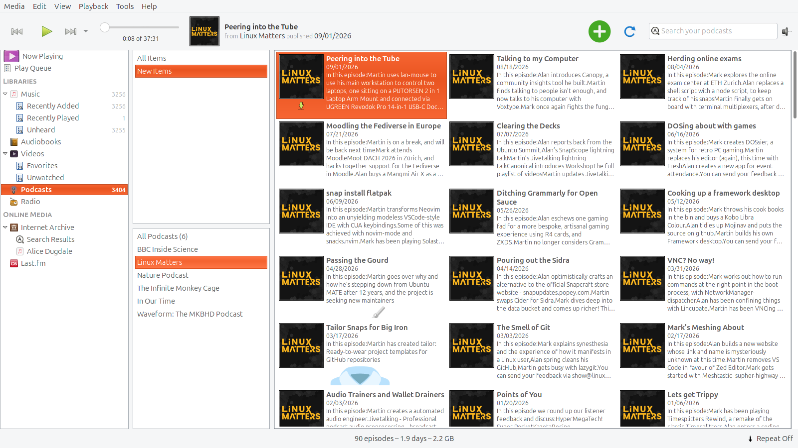
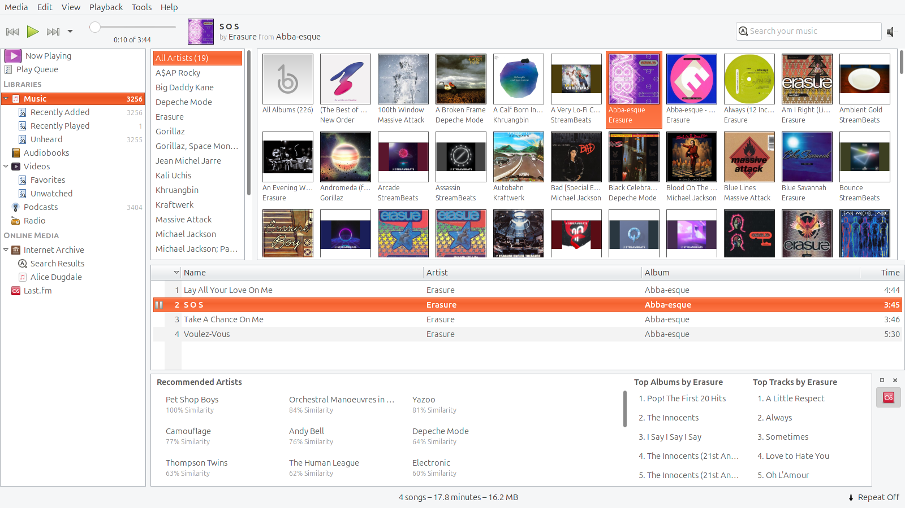
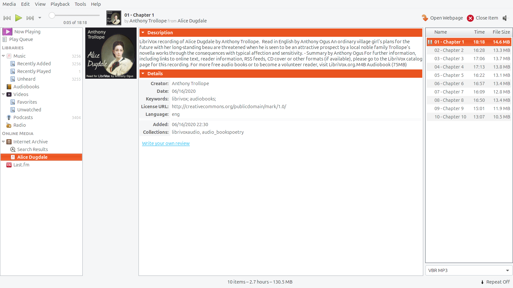

Banshee 2.6.2
Screenshot candidates · Yaru · 1600×900 · 12 September 2026

Browse your music collection — Album artwork, artist browsing and a library of 3,256 tracks.
Now playing — Local music playback with album art and Last.fm recommendations.
Follow your favourite podcasts — Six subscriptions spanning technology, science and BBC programmes.
Listen to Linux Matters — Episode browsing, downloaded audio and automatically fetched artwork.
Discover related music — Last.fm recommended artists, top albums and top tracks alongside your library.
Explore the Internet Archive — Search, audiobook details and chapter streaming with artwork.